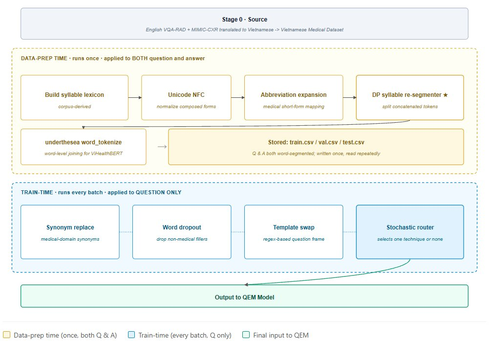

ROUGE-L
55.41
▲ +14.07 over Qwen2.5-VL
Undergraduate IT Project · Ton Duc Thang University · 2025–2026
An end-to-end Vietnamese Medical VQA system designed to answer free-form clinical questions regarding diverse medical imagery (including chest X-rays, brain MRIs, etc...). Built on a custom architecture utilizing a Qwen2.5-3B backbone and Multi-Scale Cross-Attention, this parameter-efficient model was trained on 8,000 QA pairs.
Faculty of Information Technology — Ton Duc Thang University, Ho Chi Minh City, Vietnam
Test set · 800 samples · beam-4 decoding
ROUGE-L
55.41
▲ +14.07 over Qwen2.5-VL
BLEU-4
27.15
▲ +14.47 over Qwen2.5-VL
MDR clinical recall
64.45
▲ +11.57 over Qwen2.5-VL
Comparison: our beam-4 score vs Qwen2.5-VL-3B (zero-shot, greedy decoding). Under matched greedy decoding our system reaches 53.06 / 24.65 / 64.58 — also above every baseline.
01 — The gap
8,000
chest-X-ray Q–A pairs we translated from MIMIC-CXR and VQA-RAD — the corpus that didn’t exist before this project.
1
NVIDIA T4 GPU. The entire training pipeline fits within the memory of a free Kaggle session.
3B
parameters — our budget, against published vision-language models ranging from 2B to 4B that we benchmark zero-shot.
Vietnamese is an analytic language with unmarked word boundaries: spaces separate syllables, not semantic words. Multilingual encoders trained on space-separated languages systematically degrade on Vietnamese clinical text — the very text that contains the patient’s symptoms, the radiologist’s impression, and the question a doctor actually wants answered.
Our hypothesis: a small system built specifically for Vietnamese medical language will outperform much larger general-purpose models on Vietnamese medical tasks. This project tests it.
02 — Method

Figure 2 · Image-Embedding Module (IEM)

The augmented X-ray flows through BiomedCLIP ViT-B/16 and
DINOv3 ViT-S/16 in parallel. BiomedCLIP contributes
domain-aligned biomedical-text-trained features at the global level;
DINOv3 contributes self-supervised structural features at the patch
level, projected by the trainable dim_proj layer to match the
shared 768-dimensional space. The module emits two heterogeneous outputs —
enhanced_global for low-frequency context and
enhanced_local for fine-grained anatomical regions — which the
MSCA adapter consumes downstream. Keeping both encoders frozen is what
makes single-T4 training feasible.
Figure 3 · Vietnamese text preprocessing pipeline

Vietnamese clinical text needs more than a tokenizer. Data-prep time
(yellow) runs once over the corpus: a corpus-derived syllable lexicon, Unicode NFC
normalization, medical-abbreviation expansion, our novel
DP syllable re-segmenter that splits concatenated tokens
(timtrungthất → tim trung thất), and finally underthesea
word-level tokenization that aligns text to the units ViHealthBERT was
pre-trained on. Train-time (blue) augments only the
question side, per batch, via a stochastic router that selects at most one
of synonym replacement, word dropout, or template swap — preserving the
ground-truth answer so the training signal stays unambiguous.
i.
A dynamic-programming syllable re-segmenter splits concatenated tokens
(timtrungthất → tim trung thất) before tokenization,
followed by Underthesea word segmentation and Unicode NFC normalization.
This single intervention drives the largest measured gain in our ablation.
ii.
BiomedCLIP provides domain-aligned features; DINOv3 provides self-supervised global structure. Both encoders stay frozen — only a small trainable projection head bridges them to the language stack, keeping training tractable on a single T4.
dim_proj · 384 → 768iii.
Standard cross-entropy weights every token equally. CTPL identifies
the top-1500 clinically meaningful Vietnamese tokens
(anatomy, pathology, negators) and up-weights them by
wclin = 1.8 during training,
so the loss is paying attention to the same words a radiologist would.
ε = 0.0503 — Results
Zero-shot baselines evaluated under identical Vietnamese prompts and greedy decoding. Our system uses the same protocol; the rightmost column shows beam-4 decoding.
ROUGE-L
BLEU-4
MDR
Token Acc.
All values are percentages or ratios scaled to a 0–100 axis. Table 3 of the report.
Validation split, 6 epochs, identical hyperparameters except the variable under test.
| Variant | Vision encoder | Text pipeline | LoRA | Token-F1 | ROUGE-L | BLEU-4 | MDR |
|---|---|---|---|---|---|---|---|
| E0 | BiomedCLIP | — | — | 48.09 | 51.99 | 24.11 | 63.25 |
| E1 | + DINOv3 | — | — | 45.00 | 49.69 | 22.06 | 60.51 |
| E2 | BiomedCLIP | — | ✓ | 48.78 | 52.54 | 24.26 | 63.36 |
| E3 | BiomedCLIP + DINOv3 | ✓ | ✓ | 49.18 | 53.06 | 24.90 | 62.73 |
The text pipeline (Vietnamese-aware re-segmentation + augmentation) is the single largest driver of measured gains. Dual vision is necessary but not sufficient: adding DINOv3 without the text pipeline actually decreases ROUGE-L (E1 vs E0). The components are multiplicative, not additive.
04 — Predictions
Each panel pairs the input chest X-ray with the Vietnamese question, the radiologist’s reference answer (green) and our model’s prediction (red), plus per-sample ROUGE-L, Token-F1, and MDR.

05 — Reproducibility
Source notebooks, hyperparameter table, and training environment details will be released alongside the published paper.
Architecture
Input
PEFT
Optimization
Training
Data